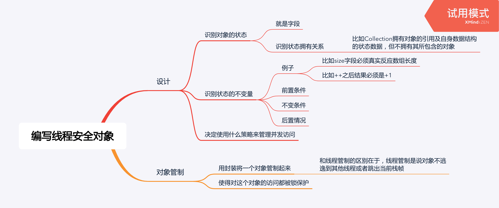

对象管制
例子1：
@ThreadSafe
public class PersonSet {
private final Set<Person> mySet = new HashSet<>();
public synchronized void addPerson(Person p) { ... }
public synchronized boolean containsPerson(Person p) { ... }
}例子2：
@ThreadSafe
public class PersonSet {
private final Set<Person> mySet = new HashSet<>();
private final Object mylock = new Object();
public void addPerson(Person p) {
synchronized(mylock) {
...
}
}
}例子3：
@TreadSafe
public class MonitorVehicleTracker {
private final Map<String, MutablePoint> locations;
public MonitorVehicleTracker(Map<String, MutablePoint> locations) {
// 深copyMap，防止MutablePoint被共享
this.locations = deepCopy(locations);
}
public synchronized Map<String, MutablePoint> getLocations() {
// 深copyMap，防止MutablePoint逃逸
return deepCopy(this.locations);
}
// 用monitor lock保护访问
public synchronized void setLocation(String id, int x, int y) { ... }
}代理线程安全
把线程安全的工作代理给其他能提供线程安全的类：
例子：
@ThreadSafe class DelegatingVehicleTracker {
private final ConcurrentMap<String, ImmutablePoint> locations;
private final Map<String, ImmutablePoint> unmodifiableMap;
public DelegatingVehicleTracker(Map<String, ImmutablePoint> points) {
// 把Map浅copy过来
locations = new ConcurrentHashMap<>(points);
// 这个比较妙，把线程安全代理给了并发Map
unmodifiableMap = Collections.unmodifiableMap(locations);
}
// 就算逃逸出去也无所谓，反正只能只读，而且因为底层是并发Map，所以不用担心可见性、原子性等问题
public Map<String, MutablePoint> getLocations() {
return unmodifiableMap;
}
public void setLocation(String id, int x, int y) {
locations.put(...)
}
}给线程安全类添加功能
给线程安全的类添加功能的时候要注意不要破坏线程安全。
客户方加锁
下面就是个反面例子：
public class ListHelper {
public List list = Collections.synchronizedList(new ArrayList());
public synchronized boolean putIfAbsent(Object v) { ... }
}这是因为putIfAbsent使用的monitor lock和synchronizedList自身使用的monitor lock不是同一个，这就破坏了线程安全。
正确的做法：
public class ListHelper {
public List list = Collections.synchronizedList(new ArrayList());
public boolean putIfAbsent(Object v) {
synchronized (list) {
...
}
}
}组合
可以这么干：
public class ImprovedList implents List {
private final List list;
public synchronized boolean putIfAbsent(Object v) {
...
list.add(v);
}
public synchronized void clear() {
list.clear();
}
...
}